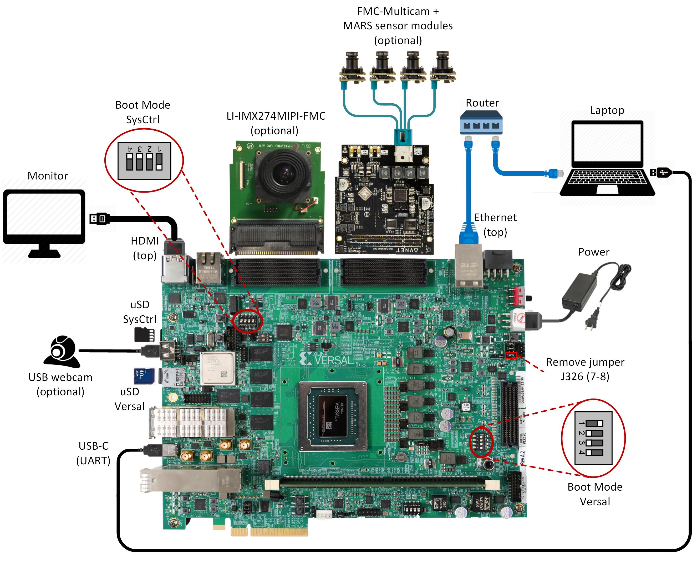

3. Run the Prebuilt Image¶
3.1. Prerequisites¶
Reference design zip file
Terminal emulator, for example
Windows: teraterm (https://osdn.net/projects/ttssh2)
Linux: picocom (https://github.com/npat-efault/picocom/releases)
Windows: Win32 Disk Imager utility (https://sourceforge.net/projects/win32diskimager)
3.2. SD Card Creation¶
Choose an unpartitioned SD card of size 8GB or greater for this demo. Use the Win32 Disk Imager utility for Windows or ‘dd’ command line utility for Linux to write the given rawdisk image ‘sdcard.img’ to the SD card.
After unzipping the image file sdcard.img.zip using windows extractor, use the following steps to write a raw disk image to a removable device using the Win32 Disk Imager utility.
Browse to the location of the unzipped image in the Win32 utility
Choose the correct SD card under ‘device’
Select ‘Write’ to the SD card, click ‘Yes’ at the prompt to continue writing and wait till the operation is complete
{kind=link}
Steps to write a raw disk image to a removable device using dd command-line utility for Linux
Unzip the given image file “sdcard.img.zip” in linux
Use dd to write sdcard.img to correct enumerated disk for SD card in the Linux machine:
unzip sdcard.img.zip sudo dd if=sdcard.img of=/dev/sdbx bs=1M
SD card partitions
Once the raw image is written to the SD card, you will be able to see two partitions. In the first partition (FAT32 format) resides:
the boot image (BOOT.bin)
the u-boot boot script (boot.scr)
and the kernel image (image.ub)
while in the second patition (ext4 format) resides the root file system.
Note: A Windows OS would only allows FAT32 partitions to be viewed, which is the boot partition, whereas ext4 format is not recognized.
3.3. Board Setup¶
The following figure shows how to set up the VCK190 evaluation board.
{kind=link}
Board jumper and switch settings
This is a onetime setup and the board should have been delivered to you with this default settings, but it is good to double check for the first time when you get the board.
Make sure you remove J326 (7-8) jumper.
Setup SYSCTRL Boot mode switch SW11 to (ON,OFF,OFF,OFF) from switch bits 1 to 4 as shown in the above picture.
Make sure you have the SYSCTRL uSD card inserted in the slot and card has the SYSCTRL image.
Setup Versal Boot Mode switch SW1 to (ON,OFF,OFF,OFF) from switch bits 1 to 4 as shown in the above picture.
Serial console settings
VCK190 comes with a USB-C connector for JTAG+UART, when connected three UART ports should be visible in Device Manager:
Versal UART0
Versal UART1 &
System Controller UART
Connect a USB-C cable to the USB-UART connector. In the terminal emulator choose Versal UART0 and use the following settings:
Baud Rate: 115200
Data: 8 bit
Parity: None
Stop: 1 bit
Flow Control: None
3.4. Connect to the JupyterLab Server¶
Follow these steps to boot the board into Linux
Ensure all steps under the section ‘Board jumper and switch settings’ are verified.
Insert the prepared micro SD card into the Versal SD card slot (refer to the image VCK190 Board Setup)
Make physical connections to ethernet, HDMI, UART, webcam and power as shown in the image.
Have the UART0 terminal emulator tab connected.
Turn ON power switch SW13.
On Versal UART0 terminal, we would see the Versal device booting from the micro SD card starting with the message “Xilinx Versal Platform Loader and Manager”
In about 60 seconds boot is complete. Observe the Linux prompt root@xilinx-vck190-qspi-2019_2 and autostart of JupyterLab server as shown in the example below:
root@xilinx-vck190-qspi-2019_2:~# [W 02:30:21.552 LabApp] JupyterLab server extension not enabled, manually loading... [I 02:30:21.571 LabApp] JupyterLab extension loaded from /usr/lib/python3.5/site-packages/jupyterlab [I 02:30:21.572 LabApp] JupyterLab application directory is /usr/share/jupyter/lab [I 02:30:21.580 LabApp] Serving notebooks from local directory: /usr/share/notebooks [I 02:30:21.581 LabApp] The Jupyter Notebook is running at: [I 02:30:21.581 LabApp] http://172.19.1.246:8888/?token=c46d443a39d2648046afdbb9bc5821177ab7cd386c218103 [I 02:30:21.581 LabApp] Use Control-C to stop this server and shut down all kernels (twice to skip confirmation). [C 02:30:23.092 LabApp] To access the notebook, open this file in a browser: file:///home/root/.local/share/jupyter/runtime/nbserver-1889-open.html Or copy and paste one of these URLs: http://172.19.1.246:8888/?token=c46d443a39d2648046afdbb9bc5821177ab7cd386c218103
Follow these steps to connect to the jupyter-server using Chrome browser on the laptop.
Note: This demo is tested with Chrome browser only.
Copy the generated URL with token on the prompt of Versal target and paste it to the browser address bar of the laptop, for example:
http://172.19.1.246:8888/?token=c46d443a39d2648046afdbb9bc5821177ab7cd386c218103
Note: If for any reason target fails to grab an IP address from the network, Jupyter server would fail to issue an URL. In such a case user is recommended to fix an IP address and restart the jupyter server as shown below:
/etc/init.d/jupyterlab-server stop /etc/init.d/jupyterlab-server start
To look up the jupyter server IP address and token on the target, run:
jupyter notebook list
In case of a private network, user may have to assign a static address within the subnet of the host laptop
3.5. Run the Jupyter Notebooks¶
This TRD includes four jupyter notebooks
base-trd-nb1.ipynb: Demonstrates videoplayback of a file source in rootfs of the target to the Jupyter notebook using the GStreamer multimedia framework
base-trd-nb2.ipynb: Demonstrates streaming video from a v4l2 device on the target to the Jupyter notebook using the GStreamer multimedia framework
base-trd-nb3.ipynb: Demonstrates streaming video from a v4l2 device on the target to a Hdmi monitor using the GStreamer multimedia framework
base-trd-nb4.ipynb: Demonstrates two simultaneous streaming pipelines, one from file source and another from a v4l2 device onto two individual planes of a HDMI monitor using the GStreamer multimedia framework
For file source, two VP9 encoded video files are located at /usr/share/movies/ on the root file system:
Big Buck Bunny 360p
Big Buck Bunny 480p
V4L2 device can be emulated or can be a USB webcam:
Virtual Video Device (vivid) enumerated as /dev/video0 OR
USB webcam enumerated as /dev/video2
Note: The video node can differ based on the USB webcam model
To run the notebooks, follow the below steps:
On the left pane of the browser, 4 notebooks are available under the folder Base TRD.
Double click to open the notebook
Select ‘Kernel’ → ‘Restart Kernel and Run All Cells’ from the top menu bar to run the demo. Scroll down to the end of the notebook to see the video output.
Click the rectangular icon to interrupt the kernel and stop the video stream.
Select ‘Kernel’ → ‘Shutdown Kernel’ → close the notebook tab and move to the next notebook.
{kind=link}